A professional-grade 3D viewer that reads and displays a comprehensive range of 3D file formats supported by Assimp (OBJ, FBX, COLLADA, BLEND, and more) and CAD formats, including STEP, IGES, and BRep files via OpenCASCADE. Features physically-based rendering (PBR), advanced material systems with Khronos KHR extensions, and sophisticated CAD visualization capabilities.
Features Overview
Rendering Modes & Visualization
ModelViewer supports a comprehensive range of visualization and rendering styles for different inspection and analysis needs:
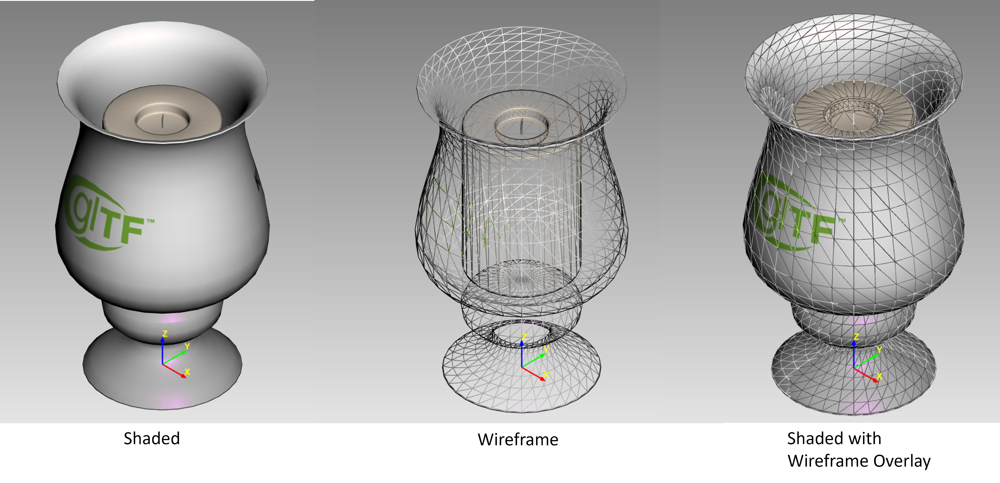
- Solid Shading: Standard surface rendering
- Wireframe: Edge visualization for topology inspection
- Wireframe Overlay: Wireframe on solid for combined visualization
- Vertex Colors: Direct vertex color visualization from model data
- ADS (Ambient-Diffuse-Specular): Traditional Phong-based lighting model
Advanced Rendering Modes
Metallic Roughness, Transmission, and Volume
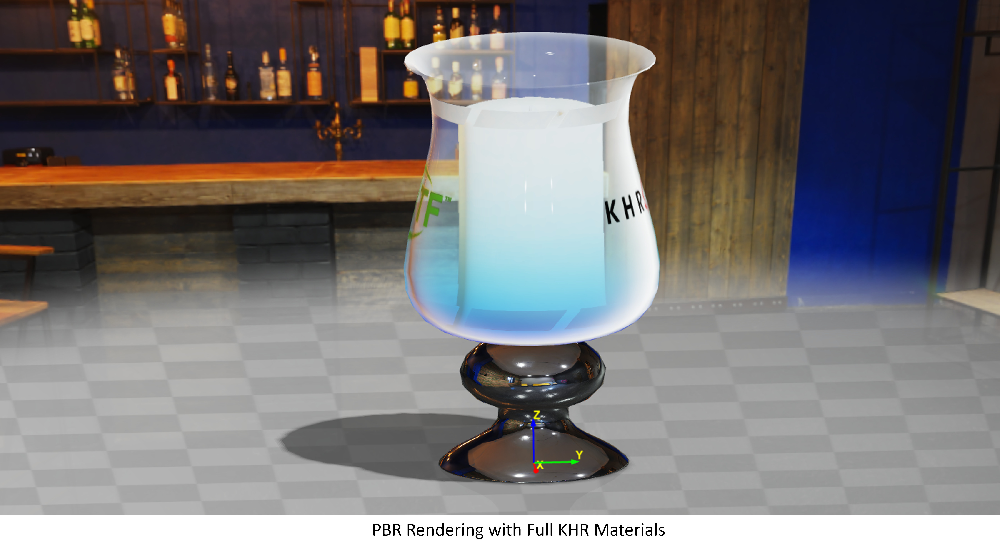
Sheen, Alpha Coverage
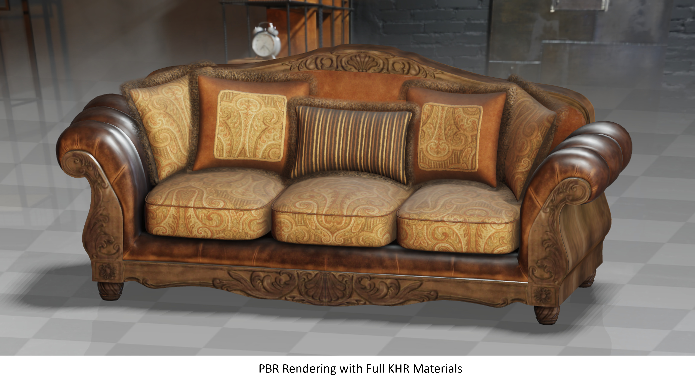
- Physically-Based Rendering (PBR): Full Cook-Torrance BRDF implementation with metallic/roughness workflows
- Split-Sum IBL: Image-based lighting with irradiance and prefiltered environment maps
- Shadow Mapping: PCF-based shadow filtering with support for directional, point, and spot lights
- Parallax/Bump Mapping: Height-based surface detail rendering
- Texture-Based PBR: Material properties driven by texture maps (albedo, normal, roughness, metallic, AO)
Material System & KHR Extensions
ModelViewer implements comprehensive support for Khronos KHR material extensions, enabling advanced material rendering capabilities:
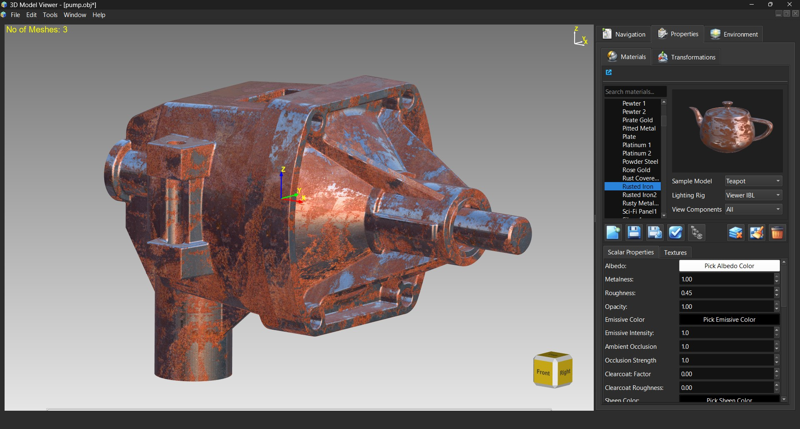
Supported KHR Material Extensions:
- KHR_materials_clearcoat: Multi-layer clearcoat materials with independent roughness control
- KHR_materials_sheen: Fabric-like materials with directional sheen highlights
- KHR_materials_transmission: Transparent materials with refraction and realistic light transmission
- KHR_materials_volume: Volumetric absorption for thick transparent materials with realistic light scattering
- KHR_materials_iridescence: Iridescent/interference-based color shifts (thin-film interference)
- KHR_materials_dispersion: Chromatic aberration with per-channel IOR for realistic prism effects
- KHR_materials_specular: Fine-grained specular intensity and color control
- KHR_materials_anisotropy: Directional surface reflection (brushed metals, fabrics)
- KHR_materials_diffuse_transmission: Subsurface scattering for translucent materials
- KHR_materials_pbrSpecularGlossiness: Legacy PBR specular/gloss workflow support
- KHR_lights_punctual: Multiple punctual light sources (directional, point, spot) with intensity control
Visual Demonstrations of KHR Material Extensions:
KHR Punctual Lights Support:
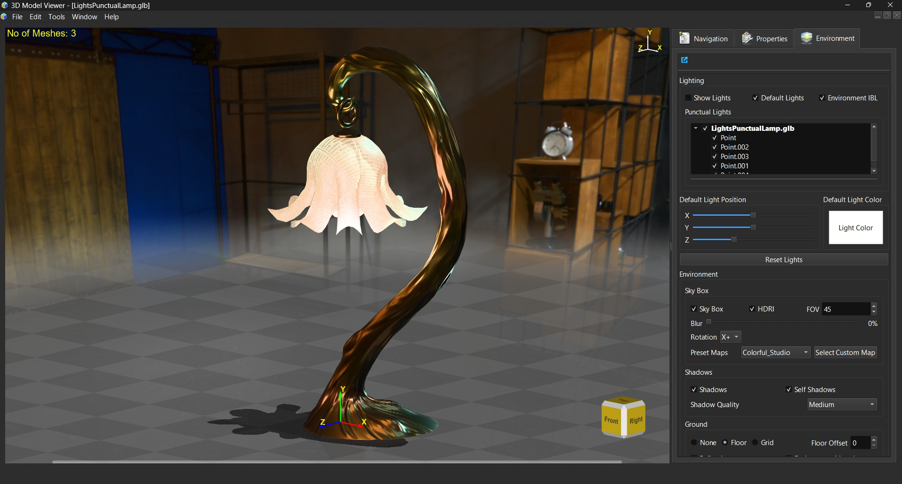
Texture Transform Support:
- KHR_texture_transform: Full implementation of UV coordinate transformations, including:
- UV scaling and rotation
- Offset (translation) around pivot points
- Multi-UV coordinate set support
- Per-texture transform customization
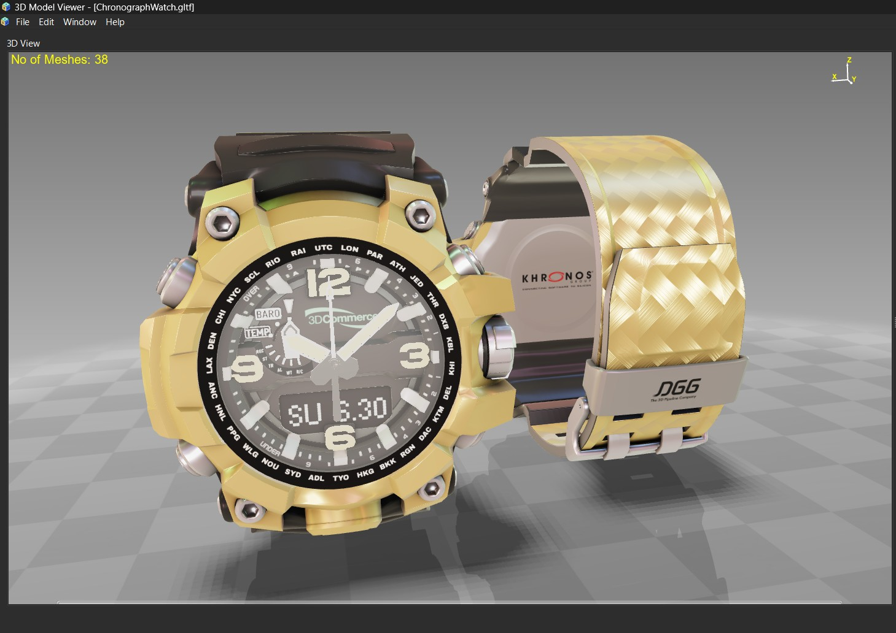
Exploded Views
Automatic and manual assembly explosion for inspecting how a model's parts fit together:
- Automatic Modes: Radial, per-axis, or custom-vector explosion driven by assembly hierarchy
- Manual Gizmo Placement: Non-destructive staging of individual parts via the interactive transform gizmo
- Capture Steps & Sequences: Reorderable explosion steps with presets for repeatable assembly walkthroughs
- Animation Export: Parallel, sequential, or separate-clip export of the explosion sequence
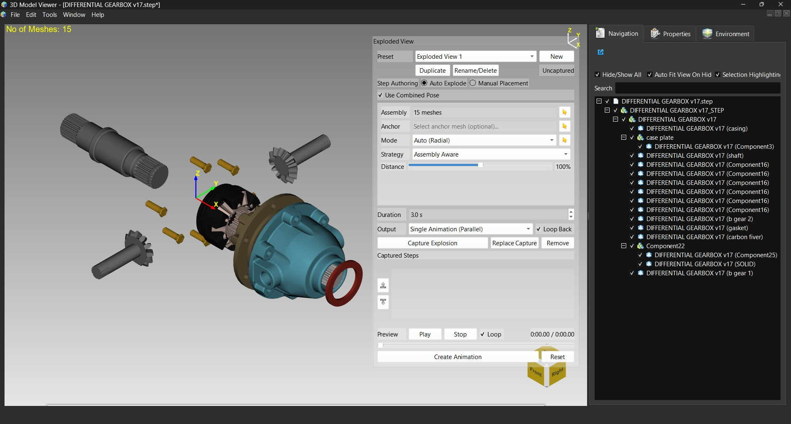
Interactive Transform Gizmo & View Cube
- On-Screen Transform Gizmo: Translate/rotate/scale handles for direct manipulation, shared by exploded-view manual placement
- Interactive View Cube: Click-to-orient navigation overlay with a switchable grid ground mode
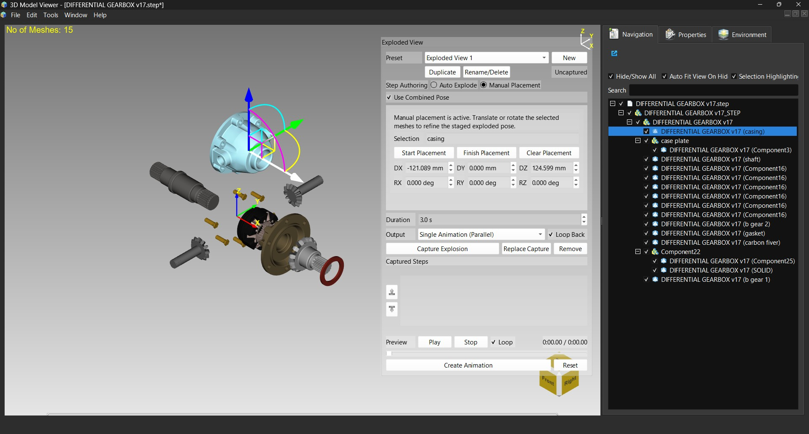
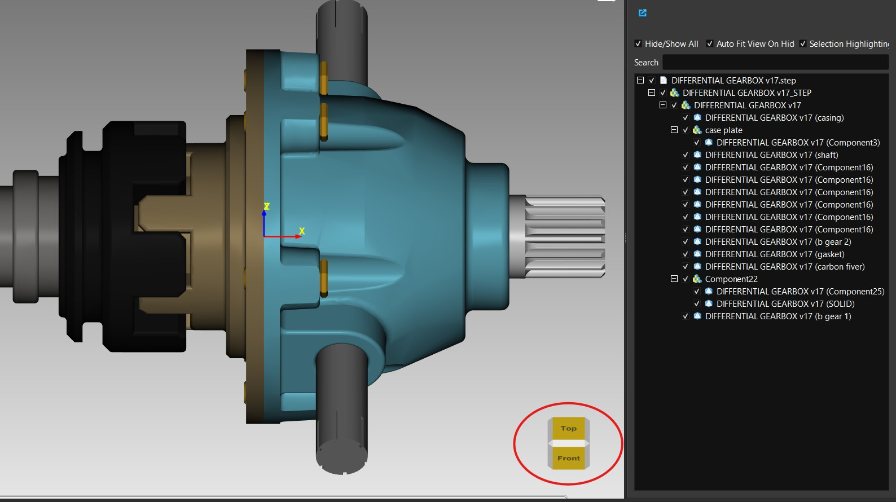
Animation System
- Morph Target (Blend Shape) Animation: Full glTF import/export round-trip, played back through the Animations panel alongside skeletal clips
- glTF Camera Support: Import/export of animated camera tracking data
- Material Variants (KHR_materials_variants): Switchable material sets per scene with full export round-trip
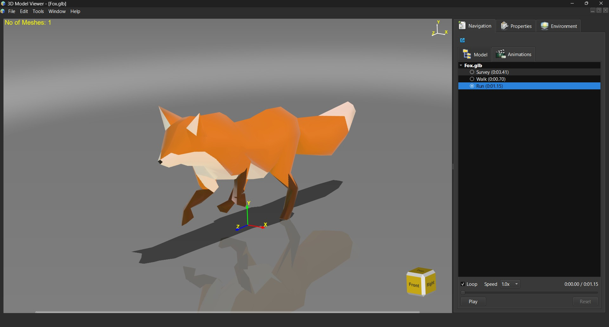
glTF Camera Support:
Import and export of glTF cameras, including animated camera tracking data driven by the same Animations panel used for skeletal and morph-target clips.
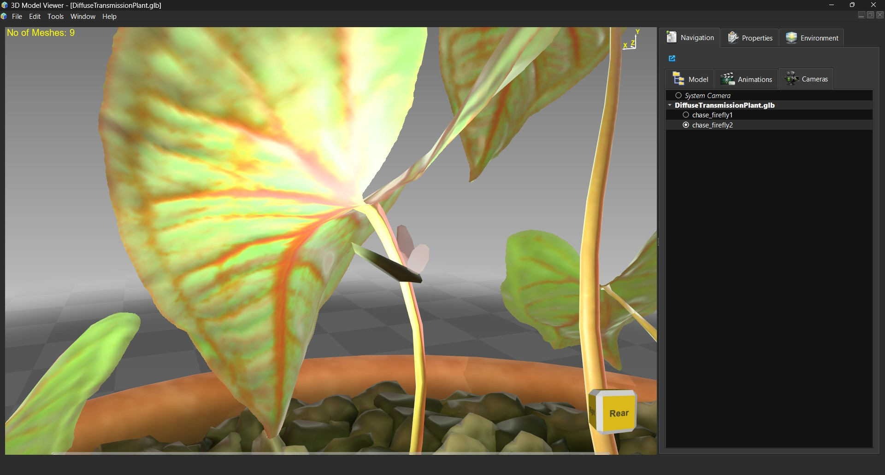
Material Variants (KHR_materials_variants):
Switchable material sets per scene — swap an object's entire material assignment at runtime (e.g. color/finish options for a product model), with full round-trip preservation on glTF/GLB export.
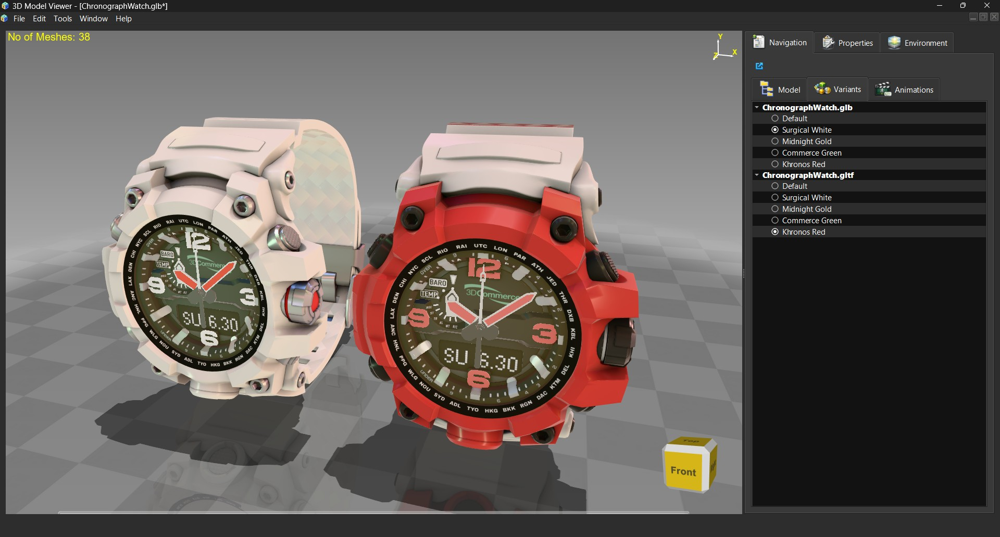
Scene Graph & Unified Material Workflow
- Scene-Graph-Aware Tree Widget: Hierarchical object navigation replacing the flat object list, with assembly-correct multi-select propagation and a detachable navigation panel
- Threaded/Progressive Loading: GPU-safe finalization keeps the UI responsive while large scenes stream in
- Unified Material Panel: Single editor merging material and texture editing, UUID-based material keys, unsaved-change tracking, and a user material library
- Texture Debugger Panel: Live texture/extension overrides with Khronos-aligned channel isolation for geometry and texture channel inspection
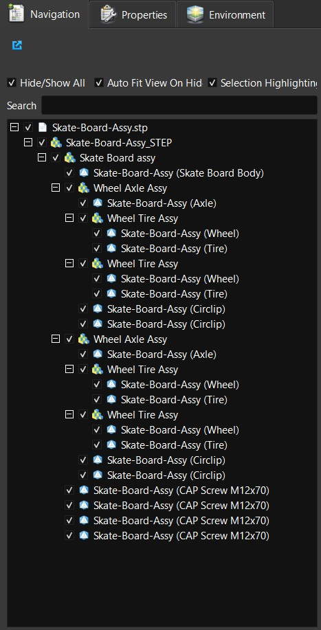
Texture Debugger Panel:
Live texture and extension overrides with Khronos-aligned channel isolation, letting you inspect individual geometry and texture channels (albedo, normal, roughness, metallic, AO, and more) in isolation.
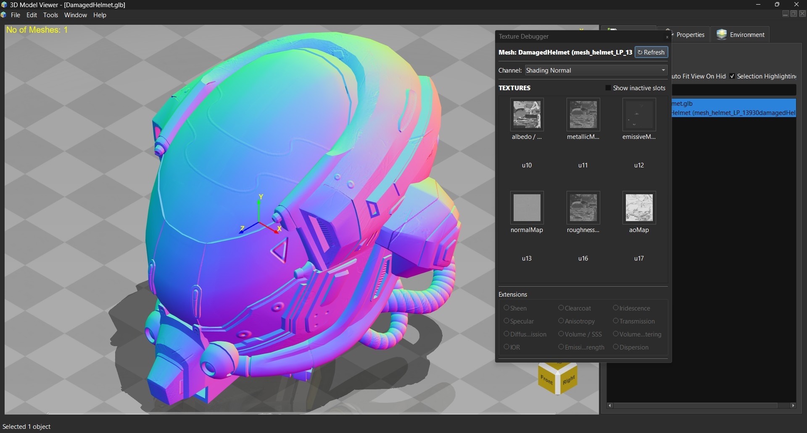
Material Editor & Library System
- Interactive Material Editor Panel: Real-time material property adjustment with live preview
- Material Library: Tree-based organization and management of materials
- Material Deduplication: Intelligent identification and consolidation of duplicate materials
- Name-Based Material Matching: Preservation of original material names across the import/export pipeline
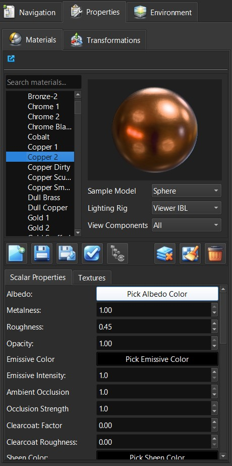
Texture Management & Advanced Features
Texture Processing:
- Automatic Embedding: Textures embedded directly into GLB exports for self-contained models
- Smart Texture Caching: Three-level lookup system (exact match → same image/different sampler → disk load) with sampler-aware cache keys
- Texture Format Support:
- KTX2 and Basis Universal compressed textures
- WebP format with automatic plugin deployment
- Standard formats (PNG, JPG, TGA, BMP)
- Texture Transform: Per-texture UV transformation with full KHR_texture_transform support
- Multi-Channel Support: Independent handling of multiple texture sets and UV coordinates
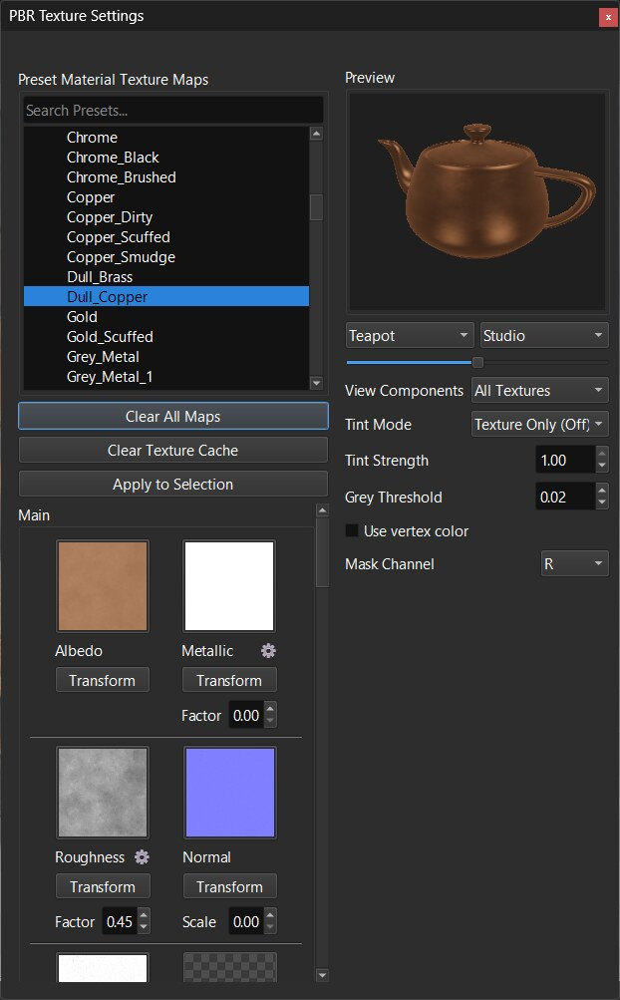
CAD Support & Assembly Visualization
OpenCASCADE Integration:
- Native STEP Support: Full parametric feature preservation
- IGES Files: Industry-standard CAD format support
- BRep Format: OpenCASCADE native boundary representation
- True B-Rep Edge Wireframe: Extracted OCC edges (not silhouette approximations) for STEP/IGES/BREP, plus feature-edge wireframe modes for OBJ/glTF meshes, with dedicated Mesh Edges and Shaded with Edges display modes
- Color Inheritance: Smart color extraction from XCAF color attributes with intelligent inheritance chains
- Property Preservation: Metadata and naming preserved across the import pipeline
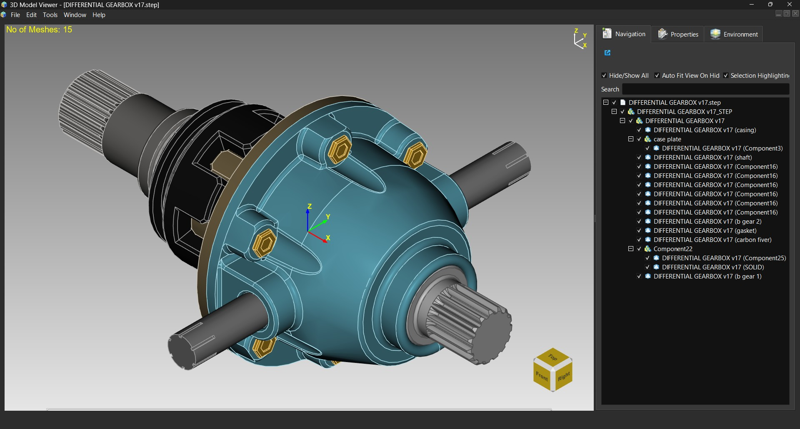
Assimp Integration:
- Multi-Format Support: OBJ, FBX, COLLADA, Blend, VRML, and 30+ other formats
- Robust Loading: Handles malformed files gracefully with validation
- Mesh Post-Processing: Automatic tangent/bitangent computation with proper transformation math
- Negative Scale Handling: Correct detection and processing of flipped geometry via determinant-based matrix analysis
Session Storage (MVF)
ModelViewer's native .mvf file is a session format, not just a
geometry export — it captures the full working state of a scene so you can pick up
exactly where you left off:
- glTF-Spec-Based: MVF3 is a glTF-spec-compatible JSON document plus a binary geometry chunk, replacing the legacy binary
QDataStream format
- Full Scene State: Materials, lights, cameras, exploded-view steps/presets, morph target and skeletal animation state, and node transforms are all persisted
- Progressive Load: Large scenes stream in with GPU-safe finalization rather than blocking the UI
Export Capabilities
- GLB Export Pipeline: Complete round-trip export with:
- Material preservation and deduplication
- Texture embedding with optimized packing
- KHR extension metadata preservation
- Correct handling of negative scales and transforms
- Sampler value preservation across materials
- Texture Embedding: Automatic embedding before export for portable model files
- Format-Agnostic Export: Support for exporting to multiple target formats
Section/Capping Tools
Advanced Sectioning:
- Single Plane Section: Cut models with arbitrary clipping planes
- Multiple Section Views: Simultaneous display of multiple cross-sections with automatic capping
- Smart Capping: Automatic generation of capping geometry to close intersected surfaces
- Interactive Adjustment: Real-time plane manipulation for dynamic sectioning
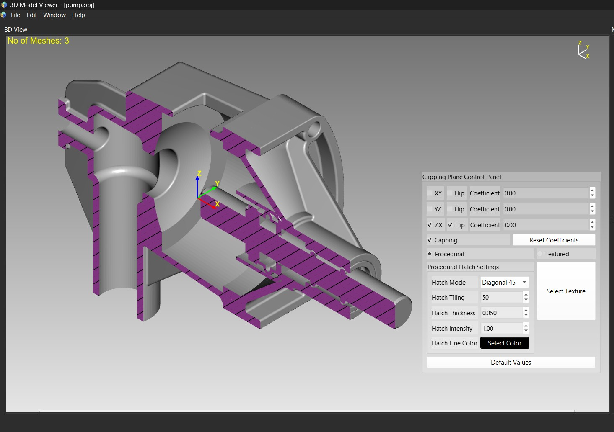
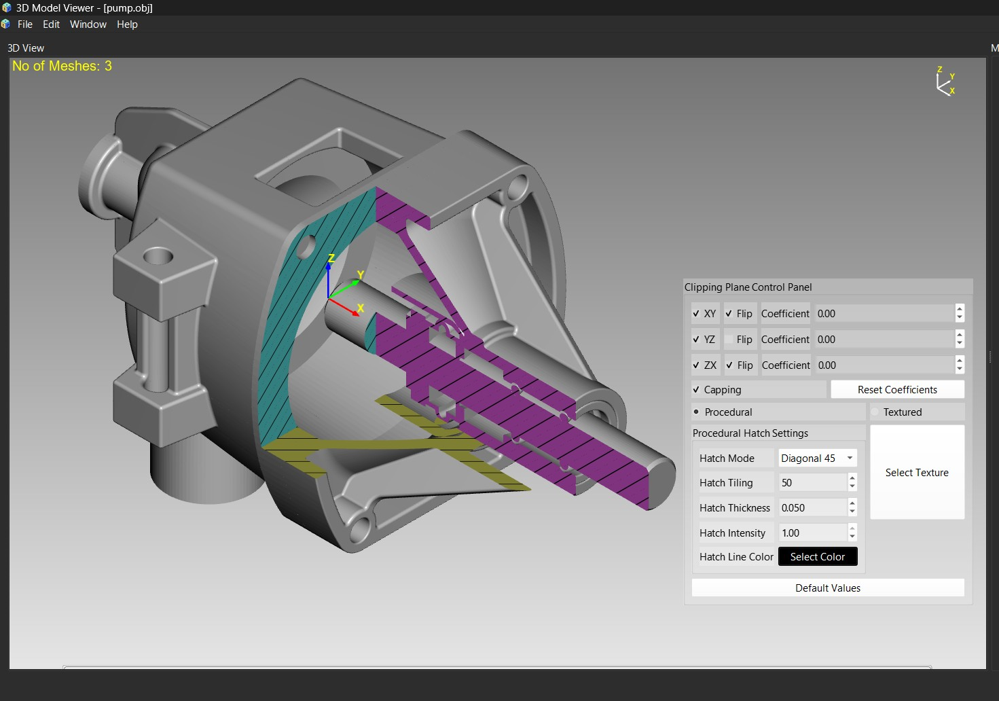
Multi-View Projection System
- Multiple Synchronized Views: Side-by-side or grid-based orthographic projections
- Standard Projections: Front, back, top, bottom, left, right, isometric views
- Anonometric Projections: Isometric, Dimetric, and Trimetric
- Orthographic and Perspective Projections
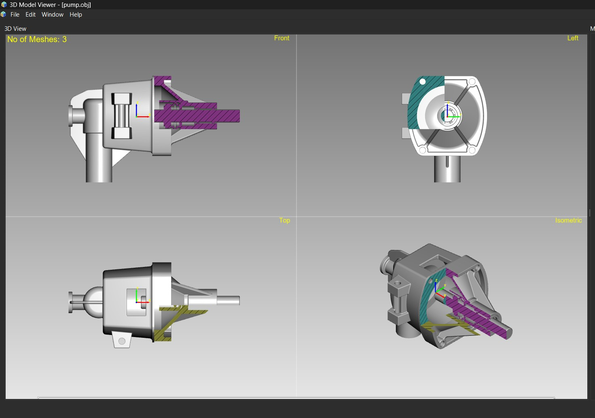
Realistic PBR Rendering
Realistic Automotive Paint Rendering (Clearcoat & Iridescence):
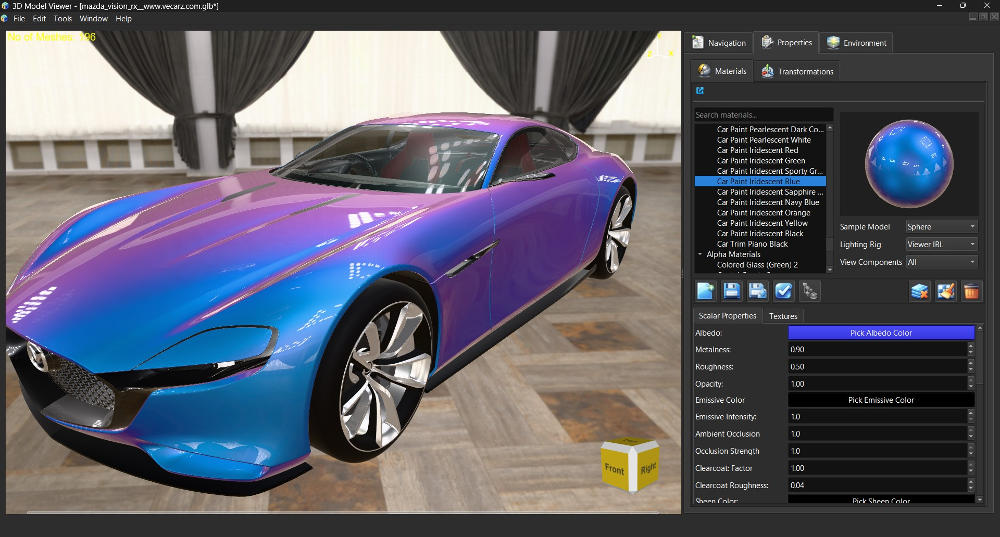
User Interface & Tools
Detachable Panels:
- Texture Mapping Panel: Interactive UV transformation and texture coordinate visualization
- Material Editor Panel: Comprehensive material property adjustment interface
- Log Viewer: Real-time application logging with syntax highlighting, search, and filtering by log level
- Material Library Panel: Tree-based material organization and management
UI Features:
- Qt6 MDI Interface: Multiple document/model windows with tabbed organization
- Scrollable Toolbar: Customizable tool access with context-sensitive actions
- Theme Manager: Light and dark theme support with customizable color schemes
- Internationalization Support: English, Spanish, French, Italian, and German
Logging System:
A detachable Log Viewer panel provides real-time application logging with
syntax highlighting, full-text search, and filtering by log level (info, warning,
error, debug), useful for diagnosing import/export issues or tracking rendering
pipeline behavior during a session.
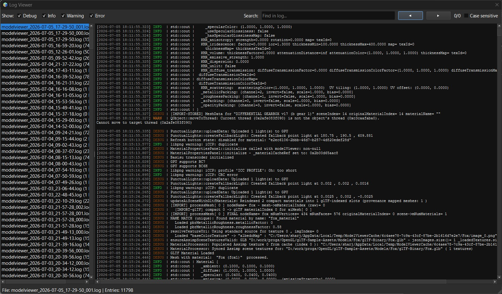
Settings Dialog:
Fully wired end-to-end across every tab — General, Camera, Display, Rendering,
Materials, Import/Export, and Debug — with an "Animate Progressive Fit" option
among the newer additions.
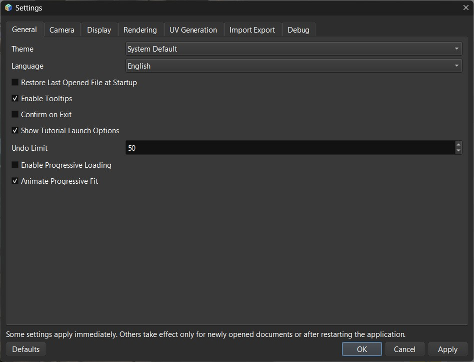
Quick Help:
An in-app reference dialog covering keyboard shortcuts and menu locations,
kept in sync with the current UI (corrected for stale shortcuts and menu paths
as part of the 2026.7.0 release).
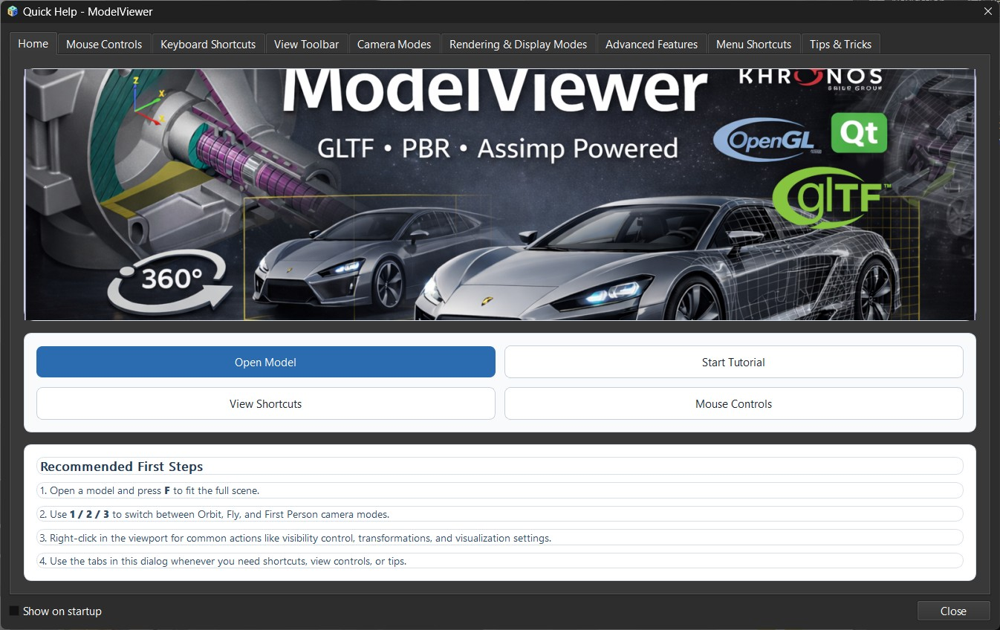
Tutorial System:
An interactive guided introduction for new users, covering 18 lessons from
basic navigation through exploded views, morph target animation, node transform
editing, and edge/wireframe rendering.
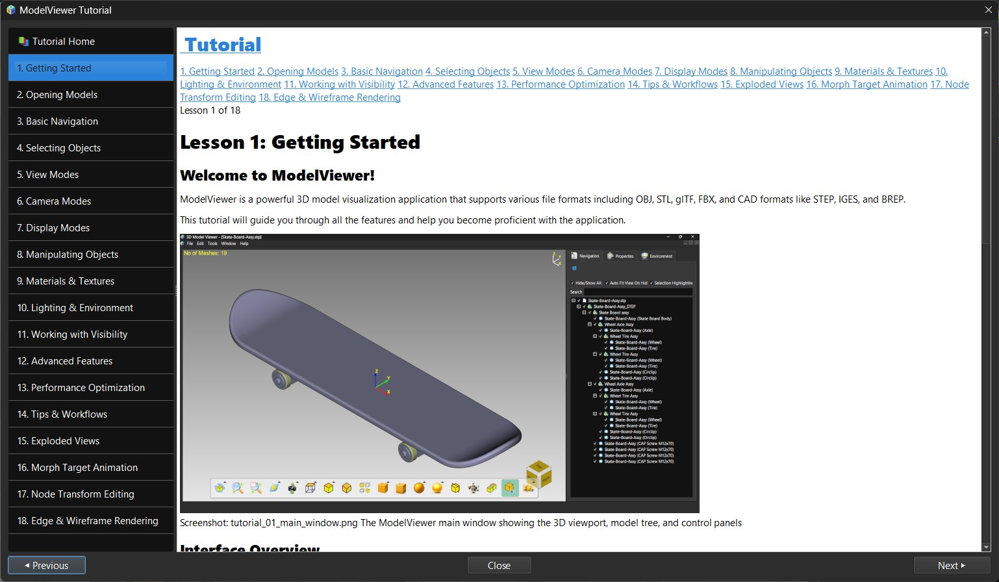
Advanced Camera & Navigation
- Orbital Camera: Smooth mouse-based model rotation and inspection
- Pan & Zoom: Intuitive view navigation with proper zoom mechanics
- Preset Views: Quick access to standard orthographic projections
- Light Manipulation: Independent light repositioning with delta-based targeting
- Perspective Correction: Proper NDC Z-clamping for accurate behavior at high zoom levels
- Dual-Camera Z-up/Y-up System: Native Z-up CAD coordinate convention alongside Y-up support, with camera/shading math aligned to the Khronos glTF reference viewer
Undo/Redo System
- Full Command History: Complete undo/redo stack for all editing operations
- Live Preview Updates: Synchronized UI panel updates on undo/redo actions
- Material Operations: Support for complex material editing operations with full history
- Tree-Driven Copy/Cut/Paste: Scene-graph-aware copy/cut/paste with deferred-removal cut semantics, plus undo/redo for mesh rename, deselection, and metadata deletion
License
ModelViewer is licensed under the GNU General Public License v3.0 (GPL-3.0).
This program is free software: you can redistribute it and/or modify it under the terms of the GNU General Public License as published by the Free Software Foundation, either version 3 of the License, or (at your option) any later version.
This program is distributed in the hope that it will be useful, but WITHOUT ANY WARRANTY; without even the implied warranty of MERCHANTABILITY or FITNESS FOR A PARTICULAR PURPOSE. See the GNU General Public License for more details.
You should have received a copy of the GNU General Public License along with this program. If not, see https://www.gnu.org/licenses/.
For the full license text, see the LICENSE file in the repository root.